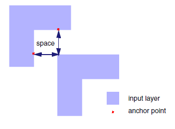
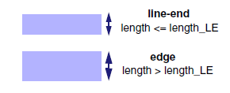
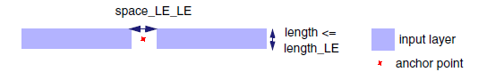
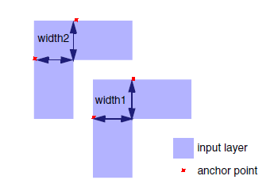
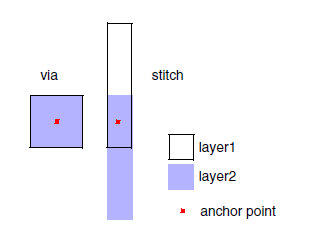
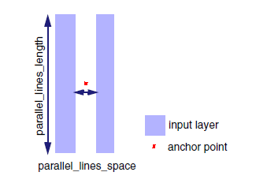

AnchorRule
Usage
AnchorRule
‑layer1 layer1_name
[‑layer2 layer2_name]
{‑space space_value |
{‑length_LE length_LE_value ‑space_LE_LE space_LE_LE_value
‑space_LE_E space_LE_E_value ‑space_E_E space_E_E_value}}
‑width1 width1_value
[‑width2 width2_value]
[‑parallel_lines_length parallel_lines_length_value
‑parallel_lines_space parallel_lines_space_value]
Description
You can use LFD::AnchorRule before LFD::Anchor to define the anchor point rules for multilayer constraints in the case of multi-pattern and via layers. The LFD::AnchorRule command is specified for an input layer or layer pair and must precede the LFD::Anchor command in the Calibre LFD rule file. The LFD::AnchorRule command can be specified multiple times in the Calibre LFD rule file before specifying the LFD::Anchor command. Duplicate layer specifications are not supported within LFD::AnchorRule.
The relationship between LFD::AnchorRule and LFD::Anchor specifications is as follows:
Arguments for input layers specified in LFD::AnchorRule must also be specified as input layer arguments in LFD::Anchor.
Arguments specified in LFD::AnchorRule override corresponding arguments specified in LFD::Anchor for a specific input layer or input layer combination.
Arguments not specified in LFD::AnchorRule default to argument values specified in LFD::Anchor for a specific input layer or input layer combination.
You can specify a single layer or layer pair (same-layers or different layers) as an input to LFD::AnchorRule. However, a rule must be defined for the single layer or layer pair combination.
Overlapping layers, as in the case of stitches (multi-pattern) or vias (multilayer) that meet width constraints, receive a center anchor point in the middle of the overlap area.
Arguments
- ‑layer1 layer1_name
Required keyword and argument specifying the name of the first input layer.
- ‑layer2 layer2_name
Optional keyword and argument specifying the name of a second input layer in the case of multi-pattern or multilayer (via) anchor points. If the ‑layer2 keyword is specified, the ‑width2 keyword must also be specified.
- ‑space space_value
Required keyword and argument specifying the critical space between shapes of the input layer or layers. This value gives the constraint for anchors near convex corners. Spaces at or below this value are considered for anchor point sites. Specify this value in user units.
Figure 1. LFD::AnchorRule Space- ‑length_LE length_LE_value ‑space_LE_LE space_LE_LE_value ‑space_LE_E space_LE_E_value ‑space_E_E space_E_E_value
Required keyword set and arguments specifying the critical length and space constraints for generating anchor points. This keyword set is used in place of the ‑space argument.
‑length_LE length_LE_value
Required keyword and argument specifying the maximum length of an edge that can be defined as a line‑end. Any length greater than this value is defined as an edge. Specify this value in user units.
Figure 2. LFD::AnchorRule Length LE‑space_LE_LE space_LE_LE_value
Required keyword and argument specifying the maximum space between two line‑ends that can result in anchor points. Parallel line‑ends with separation less than or equal to ‑space_LE_LE result in an anchor point between the two parallel line‑ends. Specify this value in user units.
Figure 3. LFD::AnchorRule Space LE_LE‑space_LE_E space_LE_E_value
Required keyword and argument specifying the maximum space between a line‑end shape and an edge that can result in anchor points. Only line-end corners with edge distances that are less than or equal to this value are considered for anchor points. Specify this value in user units.
Figure 4. LFD::AnchorRule Space LE_E and E_E
‑space_E_E space_E_E_value
Required keyword and argument specifying the maximum space between edges that can result in anchor points. Only edges whose distances are less than or equal to this space are considered for anchor points. Specify this value in user units.
- ‑width1 width1_value
Required keyword and argument specifying the critical width of the first input layer shape. Edges within the critical distance from concave corners receive anchor points. Specify this value in user units.
Figure 5. LFD::AnchorRule Widths- ‑width2 width2_value
Optional keyword and argument specifying the critical width of the second input layer shape. If the ‑width2 keyword is specified, the ‑layer2 keyword must also be specified. Edges within the critical distance from concave corners receive anchor points. Specify this value in user units.
For a stitch or via, an anchor point is generated in the center of the overlap region. The anchor point site is determined by the width value(s) specified in LFD::AnchorRule. If not specified, the width value specified in LFD::Anchor is used.
Figure 6. LFD::AnchorRule Stitch and Via Anchor Points- ‑parallel_lines_length parallel_lines_length_value
Optional keyword and argument specifying the minimum common length for edges to be considered parallel line shapes. If specified, the ‑parallel_lines_space keyword and value must also be specified. Specify this value in user units.
Figure 7. LFD::AnchorRule Parallel Lines Length and Space- ‑parallel_lines_space parallel_lines_space_value
Optional keyword and argument specifying the maximum space between common length edges to be considered for anchor point sites. Resulting anchors are located at the midpoint between the parallel line shapes. If specified, the ‑parallel_lines_length keyword and value must also be specified. Specify this value in user units.
Examples
Example 1
The LFD::AnchorRule command must precede the LFD::Anchor command in the Calibre LFD rule file. In this example, the ‑space keyword is not specified in LFD::AnchorRule, so the spacing rules are defined by the keyword set ‑length_LE, ‑space_LE_LE, ‑space_LE_E, and ‑space_E_E.
LFD::AnchorRule spacing rules override corresponding LFD::Anchor spacing rules, likewise, LFD::AnchorRule width rules (‑width1 and ‑width2) override LFD::Anchor ‑width rule.
LFD::AnchorRule \
-layer1 M1_1 \
-layer2 M1_2 \
-length_LE 0.06 \
-space_LE_LE 0.04 \
-space_LE_E 0.05 \
-space_E_E 0.06 \
-width1 0.04 \
-width2 0.04
LFD::Anchor
-layer {M1_1 M1_2} \
-width 0.05 \
-space 0.05 \
-parallel_lines_length 0.7 \
-parallel_lines_space 0.03 \
-merge_distance 0.05 \
-layer_out anchors
Example 2
In this example, the input layer M1_2 is not specified in LFD::AnchorRule. Both the argument values for M1_2 and the layer combination {M1_1 M1_2} default to the values specified in LFD::Anchor.
LFD::AnchorRule \
-layer1 M1_1 \
-length_LE 0.06 \
-space_LE_LE 0.04 \
-space_LE_E 0.05 \
-space_E_E 0.06 \
-width1 0.04
LFD::Anchor
-layer {M1_1 M1_2} \
-width 0.05 \
-space 0.05 \
-parallel_lines_length 0.7 \
-parallel_lines_space 0.03 \
-merge_distance 0.05 \
-layer_out anchors